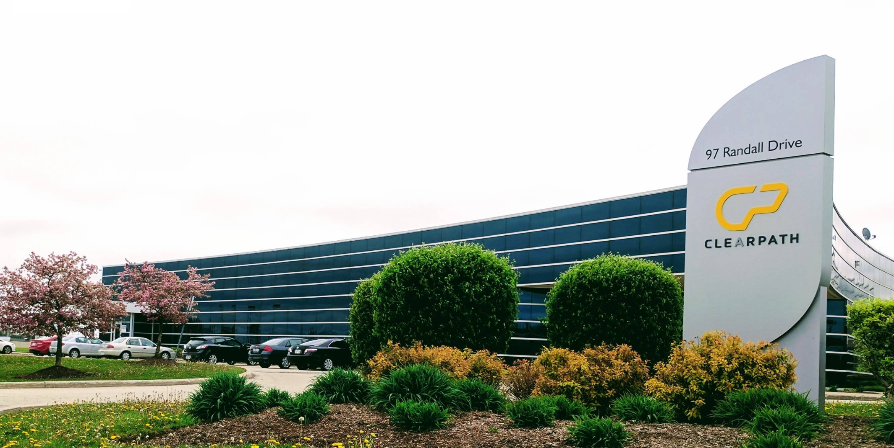
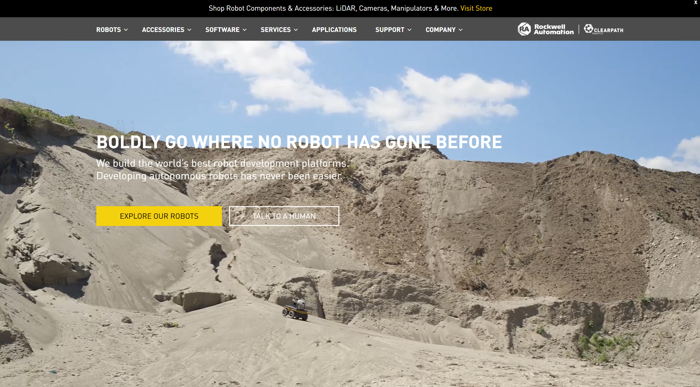
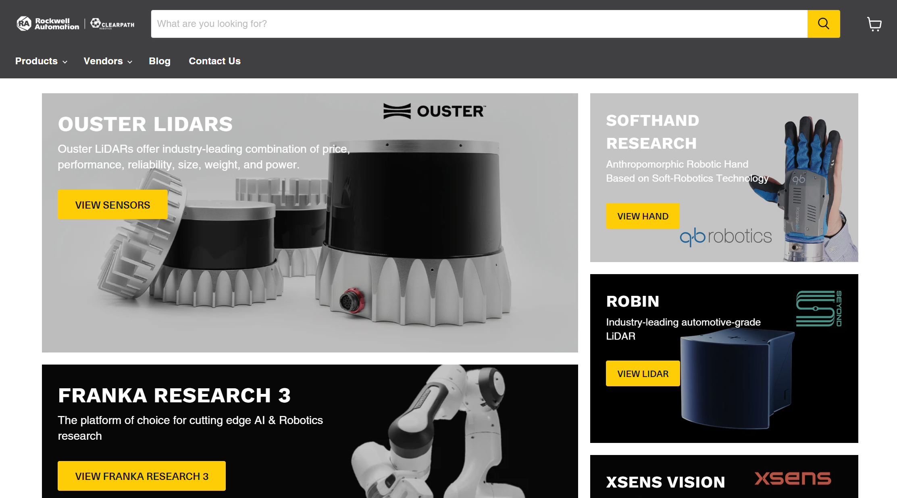
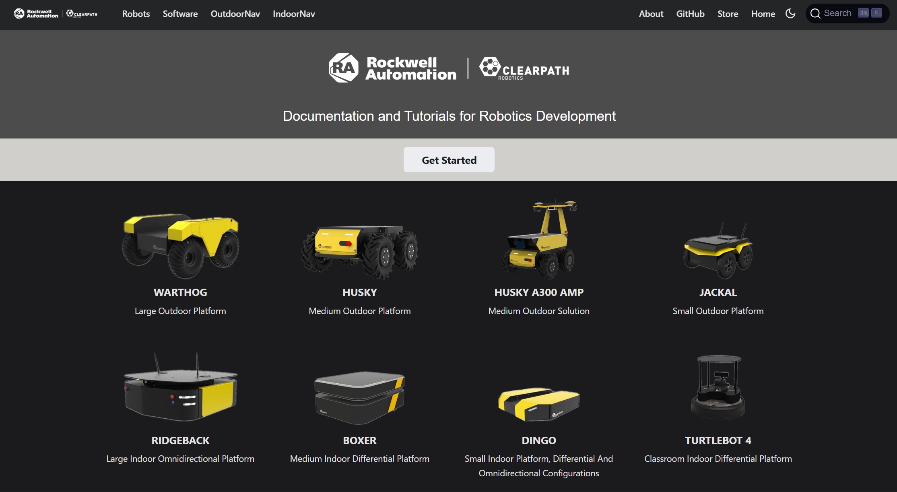
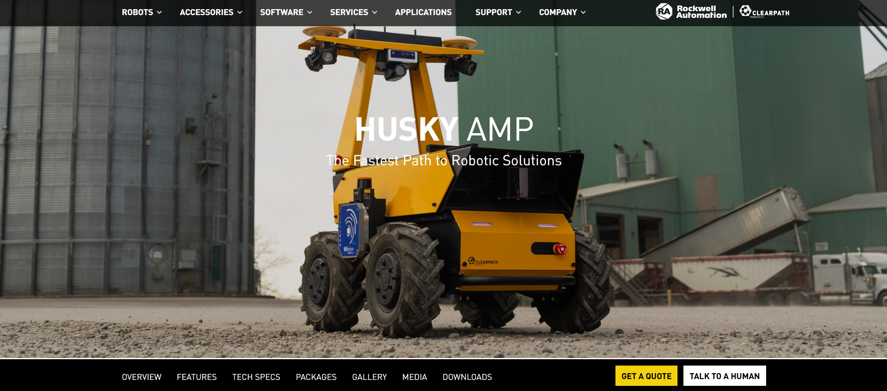
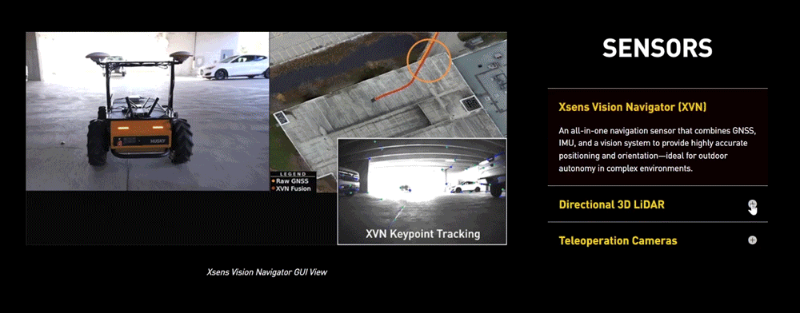
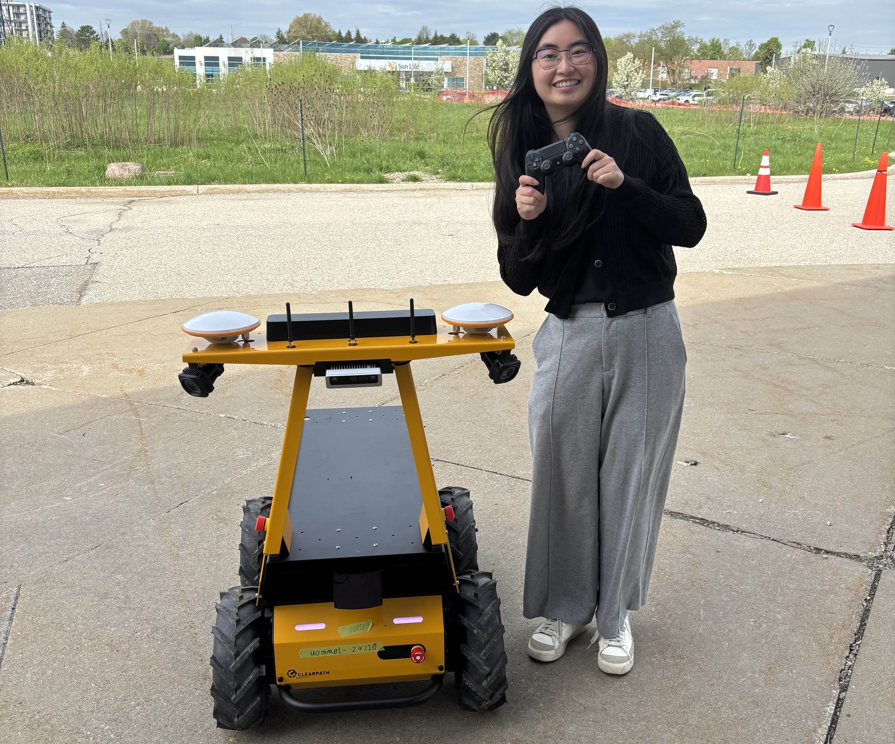
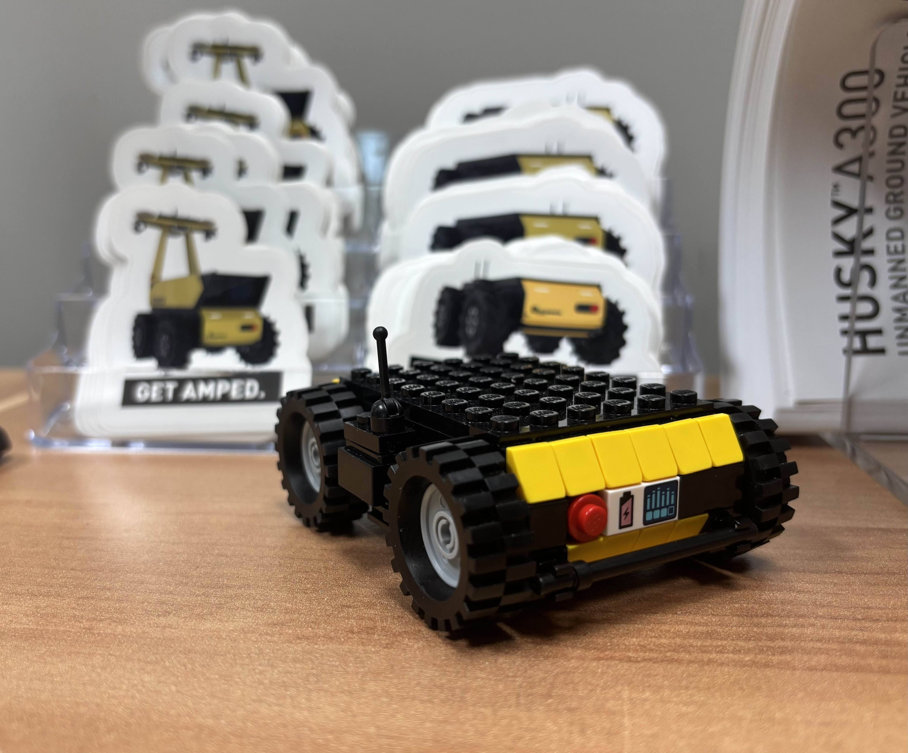

A specific section that I am especially proud of is our Sensors section for the AMP! This section was suggested by those on the Sales and Software team, as they wished to showcase the different sensors and cameras that the AMP has. It involved a lot of collaboration, planning, and discussions between our three teams... especially regarding how to present the sensors in such a way that creates engagement and conveys each component's functionality.
Work Term Report 3

Introduction:
Before this term, the robotics industry was quite intimidating to me. When I heard the word “robot,” I would think of AI, humanoids, and the famous robot dog, Spot. Additionally, I would often associate robots with adjectives such as high-tech, innovative, and intimidating, the latter especially due to rising fears of AI and robotic takeovers.
This summer, however, has changed my perception of robots and the robotics industry massively. I joined Clearpath Robotics by Rockwell Automation as a Digital Marketing and Web Coordinator, and learned that the robotics industry is indeed high-tech and innovative— but also incredibly supportive and people-first! And so, this is my experience with Clearpath Robotics, a small and mighty team filled with innovation and drive.
About My Team:

Clearpath Robotics, recently rebranded as Clearpath Robotics by Rockwell Automation, is an automation robotics company. As a global leader in unmanned vehicle robotics for research and development, Clearpath Robotics (CPR) works with over 500 innovative brands in various industries, such as; aerospace, military, mining, agriculture, and academia.
More specifically, CPR designs and builds robots of different sizes and functions. Instead of being created for one specific task, these robots serve as versatile platforms that clients can adapt and customize for their own missions. With the following robots, CPR creates paths to innovative research and development:
🏗️ Outdoor Robots
- Warthog, Unmanned Ground Vehicle (UGV)
- Husky A300
- Jackal
🤖 Solution Robots (Configurations)
- Husky Observer
- Husky A300 AMP
🪟 Indoor Robots
- Website and intranet structure strategy and development
- Users experience strategy and development
- Web system (Drupal 7, Drupal 9/Content Hub, SharePoint) support for the college's students, staff, and faculty
- Strategic recruitment and communications web pieces for future, current, and graduate students
CPR's mission is to boldly go where no robot has gone before-- envisioning robots that take on tough, repetitive, and/or risky jobs so that people may work in a way that is safe and fulfilling. Filled with innovation and drive, CPR is comprised of many teams that constantly push the robotics industry.
Our Marketing Team
CPR's marketing team is small but mighty, having only three members—including myself! The other two are Chris Bogdon, our marketing manager, and Darby Mills, the marketing coordinator. Despite having such a small number of members, our marketing team covers many responsibilities!
- Strategic marketing planning and analysis
- Event planning and hosting
- Newsletter and blogs
- Social media posts
- Website maintenance and content
- Shopify maintenance and content for robot accessories and components
- Robot photography and videography
For this summer, our team focused on modernizing our content and image, while simultaneously producing new content for our site, socials, and events. We collaborated with many other teams as well, such as the sales and engineering team! Each team had their own external communications and styles—and it was very fascinating to see how marketing takes each individual voice and combines it into one, cohesive message that represents CPR's voice and brand.
Role: Digital Marketing and Web Coordinator
When applying for the role of Digital Marketing and Web Coordinator, I noticed that the posting was aimed towards Marketing students, rather than tech. However, I'm very glad that I applied regardless and, especially, that I got the role! Despite its title and initial demographic, this role required many technical skills and knowledge that the posting didn't specify— or rather, additional skills that I brought to the role for my team to use and expand upon.
The role was a great mix of digital marketing and front-end development. I learned and gained so much regarding marketing practices, tools, and the background processes of various campaigns. Additionally, I was able to further grow and develop my technical skills and front-end experience! I primarily worked with the following platforms:

CPR uses WordPress for their main website and uses a custom theme built in the early 2010s. This summer, an initial project was to do a website migration from our current theme to a modern system with a cleaner and more visually appealing look and functionality. However, due to long processes and contract issues with third-party companies, we were unable to go through with the migration. And so, we decided to focus on maintaining and updating our current website and its pages!
Combining our theme with various plug-ins, CPR’s site is currently transitioning from dated web practices to more modern, cleaner aesthetics and functionality.
Skills and Technical Aspects:
- Content management system that has its own builder but allows for a lot of custom HTML, CSS, and JavaScript
- Web design and development (Wireframes, visual literacy, branding, navigation, etc.)
- Best web practices for images, gifs, and videos
- Best web marketing practices (forms, pop-ups, etc.)
- User experience
- Accessibility/AODA/WCAG

Not only does CPR build robots to sell, but they also offer integration services with their robots and various accessories/components. This includes robotic arms, sensors, cameras, and lots more! Alongside integration services, CPR also sells these accessories on their own through their Shopify website— which I maintained and updated throughout the summer. This includes adding and removing projects, writing the copy for new accessories, and updating outdated pages, forms, and menu items.
Skills and Technical Aspects:
- Copywriting
- Front-end development (HTML, CSS)
- Web design and development (Wireframes, visual literacy, branding, etc.)
- Best web practices for images, gifs, and videos
- Professional communication with other teams within CPR
- Accessibility/AODA/WCAG

CPR builds robots for their clients to further develop, deploy, and operate, and so documentation and support on our robots and their software is extremely important! Using the Docusaurus framework, AWS, and GitHub, the Engineering team codes and maintains their own documentation site. The CPR docs site is filled with in-depth tutorials, user manuals, and information on how to start development on our robots and specific accessories. As part of the Marketing team, I was tasked with making the documentation site more visually appealing and expand its reach to our users and audience.
Skills and Technical Aspects:
- Version Control (GitHub)
- Web Practices for images and videos
- Professional communication with CPR Engineering Team
- User experience and journey
- Accessibility/AODA/WCAG
Rather than allowing our clients to buy our robots and accessories straight from the site, we have “Request a Quote” and “Talk to a Human” forms that sends potential buyers to our sales team for further discussion and inquiries. Moreover, we have many forms and email templates/autoresponders for various campaigns and events. To host and organize these marketing campaigns and materials, CPR uses Pardot and Salesforce—which I have had the pleasure to gain lots of experience in!
Skills and Technical Aspects:
- Marketing materials (forms, emails, campaigns)
- Marketing practices (copywriting, leads, retention)
- Email design and development (HTML, CSS)
- Accessibility/AODA/WCAG
Throughout my term, I also worked with both Google Search Console (GSC) and Google Analytics to better understand CPR's online performance. I analyzed data on top-performing pages, queries, keywords, and traffic sources over the past six months and year. These tools were used to identify both positive and negative trends, which in turn supported strategic marketing and website planning! This data was especially valuable for assessing how visitors interacted with CPR's content and where improvements could be made. This helped guide content updates, SEO strategies, and web optimizations.
Skills and Technical Aspects:
- Search engine optimization (SEO) fundamentals
- Data analysis and reporting
- Identifying trends to support marketing strategies
- Making data-driven recommendations for content and design
Key Projects
The summer was filled with various tasks and projects, but I wish to highlight the two projects that I enjoyed the most!
Husky A300 AMP

CPR is constantly improving and innovating— the Husky A300 Autonomous Mobile Platform (AMP) to be their newest product release. The Husky AMP had already debut months before my arrival and was the focus of promotions and events. However, our newest robot still didn't have its own web page!
My time in CPR comprised of the creation of multiple product pages, but the Husky AMP's took the longest and was the most fulfilling. With the launch of our newest robot, the team and I aimed to create a page that was both dynamic and engaging; one that showcased the product's innovations while also elevating our website's overall presentation.
Many robot pages follow the same format, but we created many new sections specifically for the Husky AMP. This involved...
- Research
- Wireframing
- Experimentation/Testing (default modules + custom HTML and CSS)
- Integrative communication with multiple teams

Chris and I landed on a dynamic and custom widget, one where an image would change based on which block of text was selected. As our site builder didn't have such a widget, I decided to code the module through combining default modules (image and accordion) with custom JavaScript code. As I haven't made a dynamic widget before, I had a lot of fun learning and gaining experience in JavaScript, even if it was just a small block of code! However, the code seemed impossible to run on our site as the page refused to execute it. I spent a lot of time trying to figure out why my code seemed to disappear from the page—which I eventually found was due to the site's theme files... code that was too risky to modify and edit. Luckily, after a lot of testing and searching, I was able to find a code snippet plug-in that allowed me to insert my JavaScript snippet into the page directly and get the widget working! This section was a journey of resilience, and I also enjoyed searching for and creating gifs of our components!
Enews Template
As our company and products are always changing and evolving, our marketing team places great importance on updating our clients and what we've been up to. This content is delivered through a monthly email newsletter... with a template that last updated in 2019 and needed a major revamp!
This was a project that wasn't initially planned and was suggested by our marketing coordinator, who found our current template outdated and learned that I was experienced with HTML and CSS. I gladly took up the project and had so much fun with it! The process was...
- Analyze current template, what could be improved?
- Research modern email templates
- Create mock-ups of potential template layouts and sections
- Discussion + Feedback
- Create final template mock-up
- Research best email design practices
- Code new email template using HTML and CSS
- Testing
- Write documentation for the new template, such that anyone could edit it after I leave.
Collaborating with Darby, I learned a lot about marketing practices, digital and modern design, and, especially, how to code email templates using tables! As our main demographic is researchers and developers, whom are mostly of technical backgrounds, it was also interesting researching how to best target that audience. The redesign was very fast paced, yet still very enjoyable as it was a great mix of marketing and technical skills
Many of my projects furthered the importance of having an aesthetically pleasing and functional site but also taught me the value of the various ways we can create engagement and retention, as well.
Goals and Reflections
Goal 1 🎯
I wish to expand my technological literacy by exploring the wide range of industries and technologies that Clearpath Robotics is involved in! This includes robotic programming, various types of engineering, etc.
Reflection ✅
Before joining Clearpath Robotics, I had no prior knowledge of how robots are engineered, programmed, and operated. From observing and speaking with various teams (marketing, sales, engineering, integrations, etc.), I have gained so much knowledge on the development and application of robots. I learned how versatile and applicable robots are in various types of industries, such as agriculture and mining. This also includes the number of accessories you may add to your robot for specific applications-- 3D and 2D LiDARs, manipulator arms, force sensors, etc. By learning about how clients apply their robots for so many different missions and solutions that I would have never thought of, it has further pushed my thought that many solutions are fueled by creativity and innovation.
Additionally, as I learned all of these different processes and technologies throughout my term, it has allowed me to effectively deliver relevant digital content! Through increasing my understanding of the company and its technical products, I have been able to engage more clearly and effectively when discussing various tasks and how to best present/market certain elements digitally.
Overall, I have gained technical literacy in robotics, a broader understanding of industry applications, and the ability to connect that technical understanding to effective digital communication.
Goal 2 🎯
As Clearpath Robotics leads the industry with innovation and impactful solutions, my goal is to reflect and express the company's mission through my work creatively and effectively.
Reflection ✅
During my term, I had the chance to work on a variety of creative projects that strengthened both my skills and Clearpath Robotics' digital presence. With the marketing team, I created new product pages that focused on user experience while clearly expressing the company's mission and voice. To encourage more interaction with the content, I developed a dynamic widget that connected images to specific text blocks, allowing the image to change depending on which section was clicked. I also implemented pop-ups that helped increase newsletter sign-ups and redesigned the email newsletter template to give it a more modern and engaging look. Throughout these projects, I regularly collaborated with team members for feedback, which made the process both fulfilling and impactful for the company's branding.
From these experiences, I learned how design and content choices directly influence user engagement, and I saw how even small creative changes can make a big difference in communication. Overall, applying creativity in these ways allowed me to contribute meaningfully to Clearpath's mission while also growing my ability to think critically about user-focused design and marketing strategies!
Goal 3 🎯
Working with so many different industries and clients around the world, I wish to deepen my understanding of integrated communication.
Reflection ✅
Throughout this summer, I gained a much clearer understanding of how different teams at Clearpath communicate and how their approaches connect to form one strong, cohesive voice. By observing marketing, sales, and engineering, I noticed how each team's priorities shape their style of communication; marketing highlights the company's branding and why behind our work, sales emphasizes how robots can support a client's business or mission, and engineering provides technical guidance, documentation, and tailored solutions for specific applications. Seeing how these pieces fit together gave me a deeper appreciation for how important integrative communication is and how each part contributes to the overall company.
In my work at Clearpath, I made it a priority to reach out and collaborate with others to ensure my work supported their goals. For example, I communicated with sales on our components store and worked alongside engineering on the documentation site, where I learned how to use GitHub collaboratively-- making edits, submitting pull requests, and receiving support along the way. These experiences helped me not only improve the accuracy and relevance of my digital content, but also build stronger connections with different teams.
Through this collaboration, I was able to create digital content that stayed true to the company's overall mission while reflecting the unique communication goals of each team. This taught me how integrative communication isn't just about consistency but also about actively listening, learning from others, and finding ways to bring different perspectives together into something cohesive and impactful.
Conclusions and Acknowledgments


Clearpath Robotics is an incredible company built on innovation and a people-first culture. While the environment and team dynamic were quite different from my previous co-op experiences, the impact was just as meaningful. This role gave me the opportunity to build on what I had learned in past terms while also challenging me to grow and develop new skills along the way. I learned so much from CPR's yellow and black robots, having gained a new perspective on how technology can provide solutions for various industries and issues that I would have never thought of before.
I feel very grateful to have joined CPR and to have been surrounded by driven, innovative, and hard-working individuals. It was amazing to witness how so many different teams and individuals collaborated to deliver one, cohesive voice and message-- especially one that focuses on creating a world that saves people from dangerous and risky work. Everyone at CPR is so kind and supportive, and it was great to experience and be a part of a work environment that prioritized well-being, creativity, and community.
I would like to extend a huge thank you to my manager, Chris Bogdon, and other marketing member, Darby Mills. The two of them were amazing mentors throughout my term, and I appreciate their endless patient and support so much! Their trust in me to work on projects outside of my usual scope provided me with invaluable experiences and skills that I look forward to improving even more.